Treylor Park Pizza Party — Campaign & Merch System
Role: Designer · 4-person team · GRDS 301 (Audience / Behavior / Influence) Client: Treylor Park Pizza Party, Savannah, GA

Overview
Treylor Park Pizza Party is an 80s-themed pizza spot from Savannah's Treylor Park restaurant group — built for locals, not tourists. Our four-person team researched its audience and competitors, then built a retro campaign system to boost sales and engagement across dining, merch, and events. I designed the apparel line (tee and hoodie), the pizza box, and the tote — the pieces that carry the brand out of the restaurant and into the city.
Research
We grounded the campaign in primary research: a survey of dining habits, restaurant loyalty, and social platform use; interviews with locals; and a competitive scan of Savannah's pizza scene (Pizzeria Vittoria, Vinnie Van Go-Go's, Holy Pie, Mellow Mushroom).
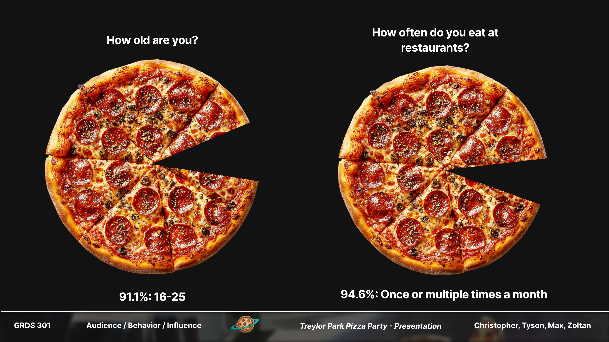
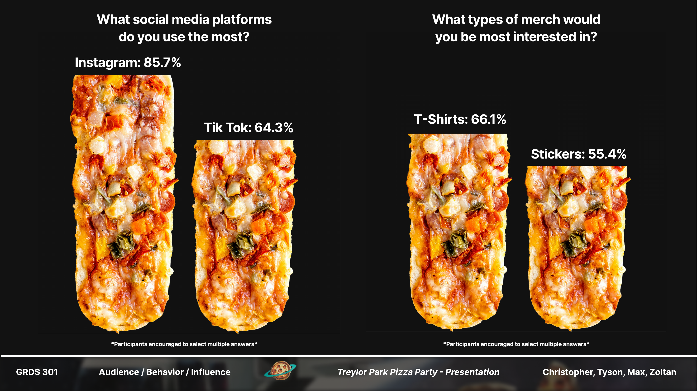
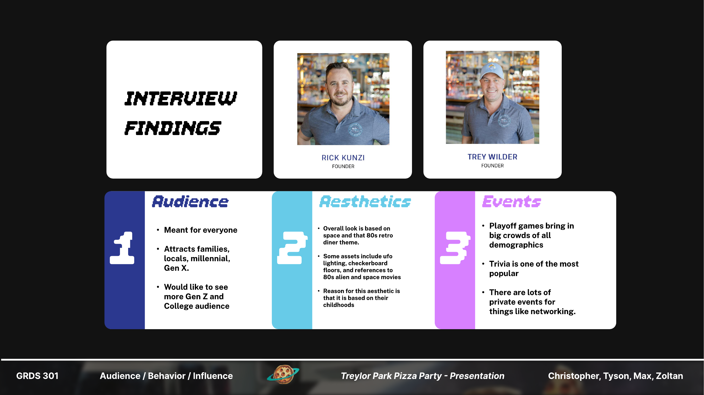
Insights → concept
Three findings shaped everything: the restaurant was created for the local community rather than tourists; its menu mixes Treylor Park staples with pizza; and the owner wanted to recapture the 80s vibe of his childhood.
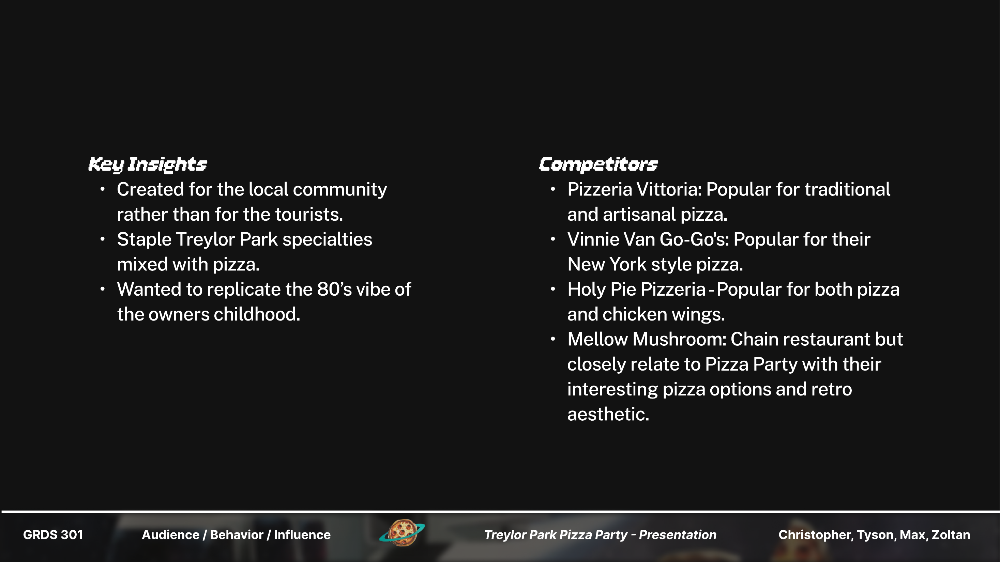
Concept: improve sales and engagement for Pizza Party by promoting its dining, merchandise, and events — drawing in Savannah locals, primarily millennials with kids and Gen Z. The key message we designed toward: "Treylor Park Pizza Party looks fun — I want to go."
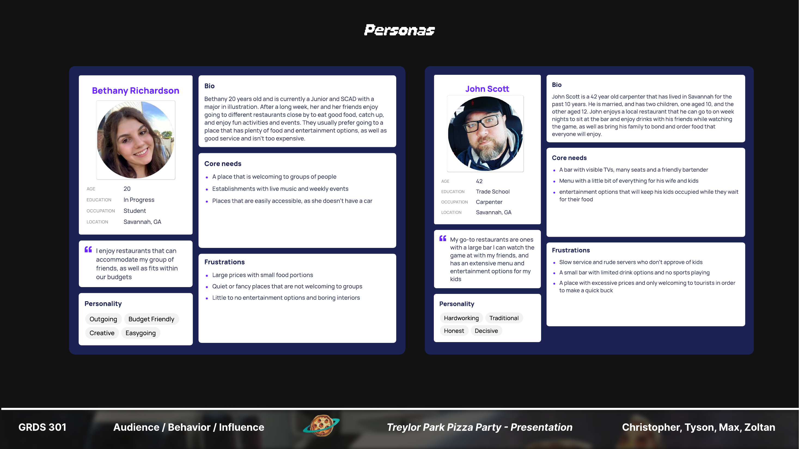
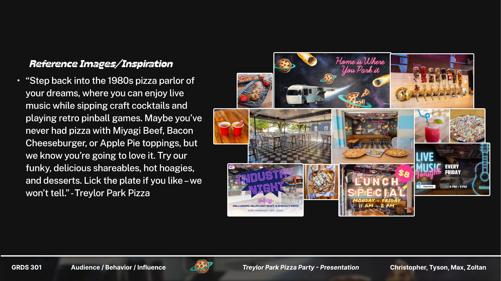
My pieces
I designed the merch and packaging layer of the campaign — a vaporwave-sunset mark built around the group's signature airstream trailer, the neon script tagline "Home is Where You Park it," and a checkered system that flexes from a chest hit on a tee to full wraparound packaging.
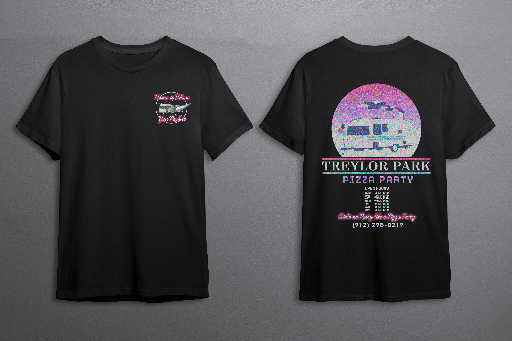
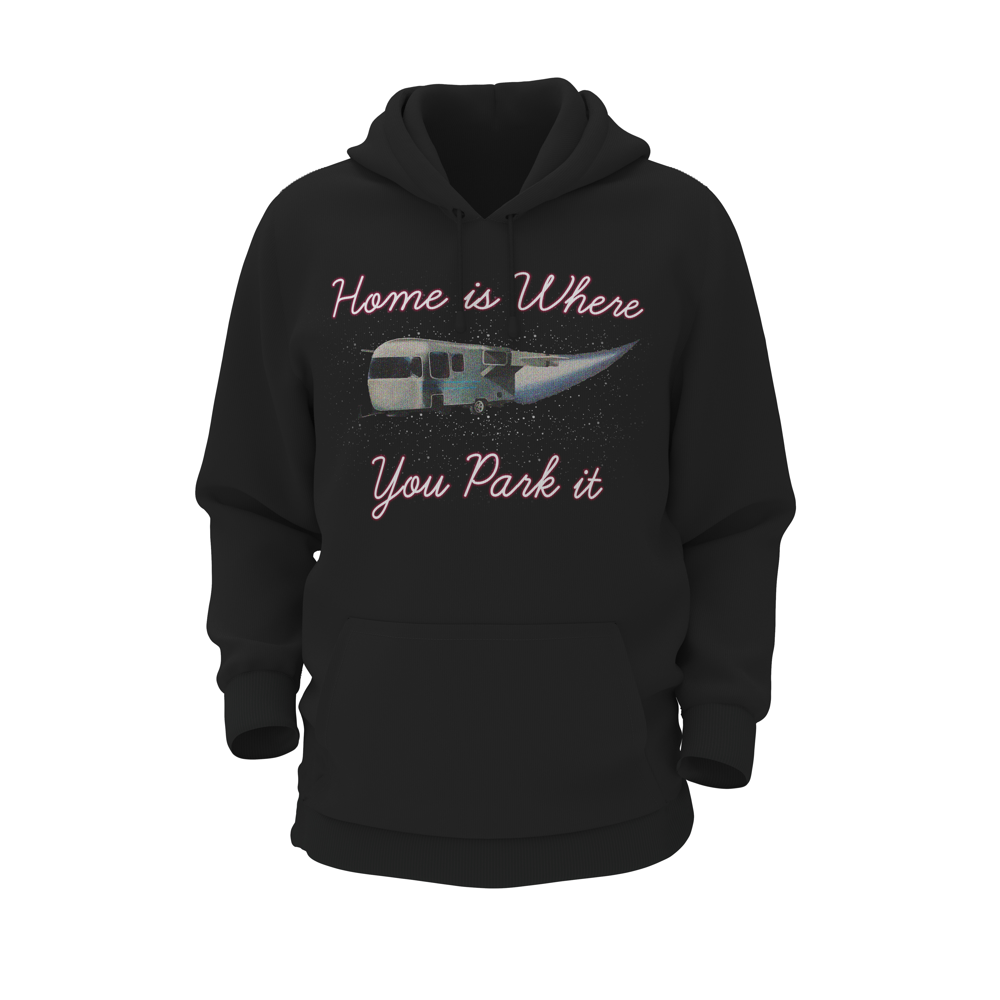
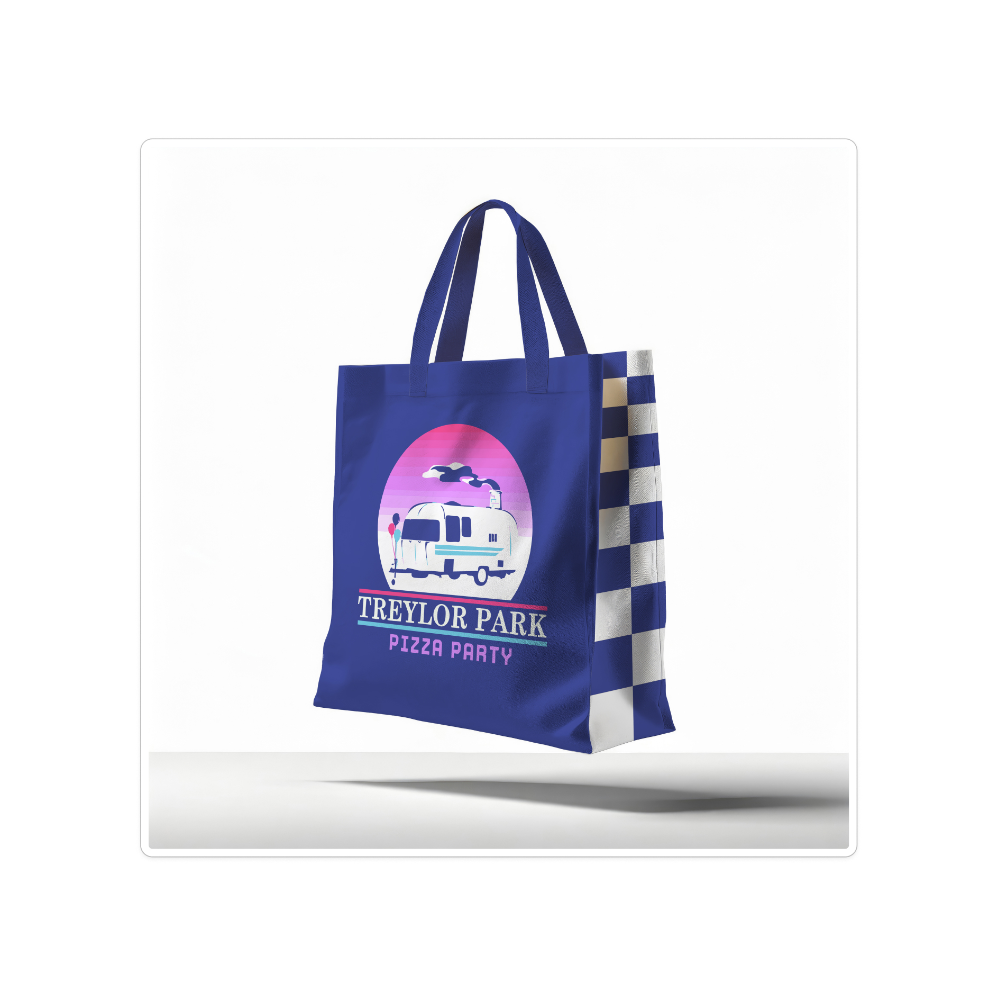
The pizza box is the system at full stretch: mark and lockup on the lid, brand name running the side panels, illustration and tagline on the front lip — designed to read from any angle on a table or a stack.
The full campaign
The team's complete delivery extended the system across additional touchpoints:
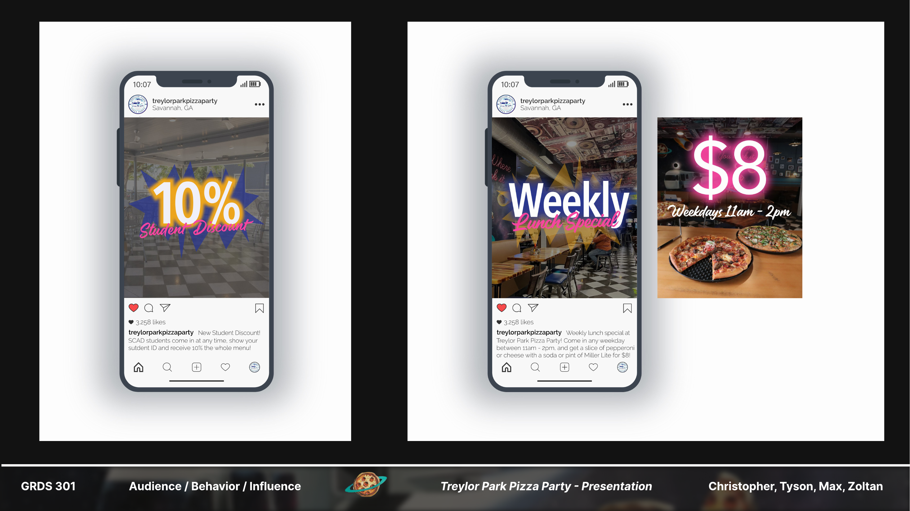
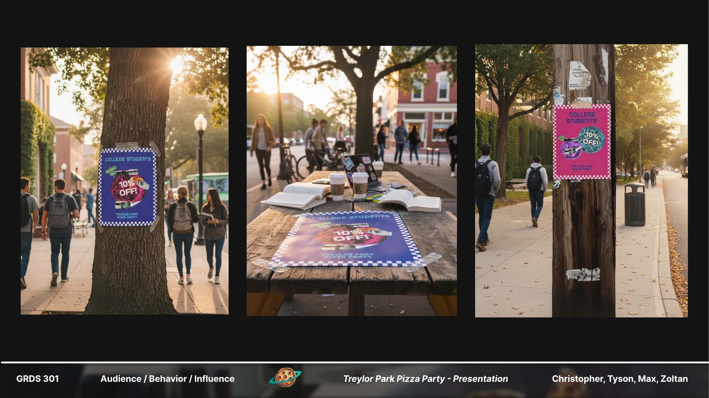
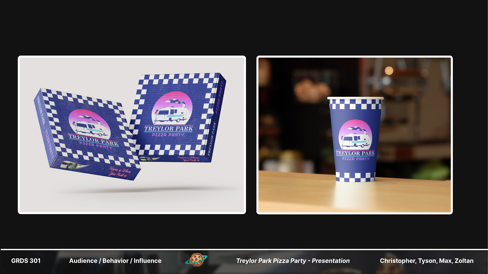
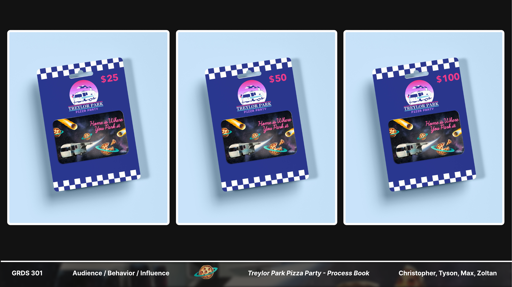
My role
On a four-person team, my lane was the physical brand layer — apparel, packaging, and merch. The research, concept, and campaign strategy were shared across the team; the tee, hoodie, pizza box, and tote shown here are my work from concept through final mockup.
Reflection
This project is where audience research met pure craft: every visual choice — the 80s palette, the airstream, the local-first tone — traces back to something we heard from Savannah locals or the owner's own story. It's the same discipline I use in UX work, pointed at a brand instead of an interface.